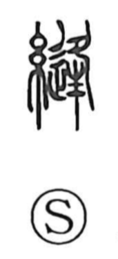

縫

Uncategorized
Kun: nuu | On: hou
to sew ・ to stitch ・ seam
Explanation
A phono-semantic character: the thread radical 糸 signals cloth and handiwork, while the phonetic value of 逢 (hou) gives the on reading. The Shuowen defines it as sewing garments with a needle. In the Zhuangzi (Dao Zhi), 縫衣 refers to robes with the sides sewn shut below the sleeves—resembling the vestments of today’s Shinto priests—suggesting that such sewn garments were associated with those who served in rites or funerals. The character thus evokes the act of stitching clothing and its dignified, ceremonial setting.